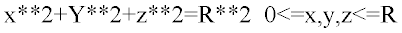

ASAP can detect the presence of duplicate surface geometry during
the CAD import process for CATIA, GTX, and IGES files. It reports occurrences
in the applicable CAD translator dialog.
Remarks
- The Locate Duplicate
Geometry feature provides a tool for identifying duplicate surface geometries
with the
same representation.
- You can enable the Locate
Duplicate Geometry feature in two preference dialog boxes: CAD Import , under
CAD Import Options for a global setting, and
Setup Parameters for the current CATIA, GTX, or IGES import session.
- Identical surface geometry
representations are highlighted in red in the ASAP Translator window, and each
set has a unique identification that is listed in the
Duplicate column. You can decide whether to
delete one of the duplicate geometries and if so, which one to delete.
- The feature does not find
duplicate surface geometries with
different representations. For example, a sphere may be either
of these representations:
